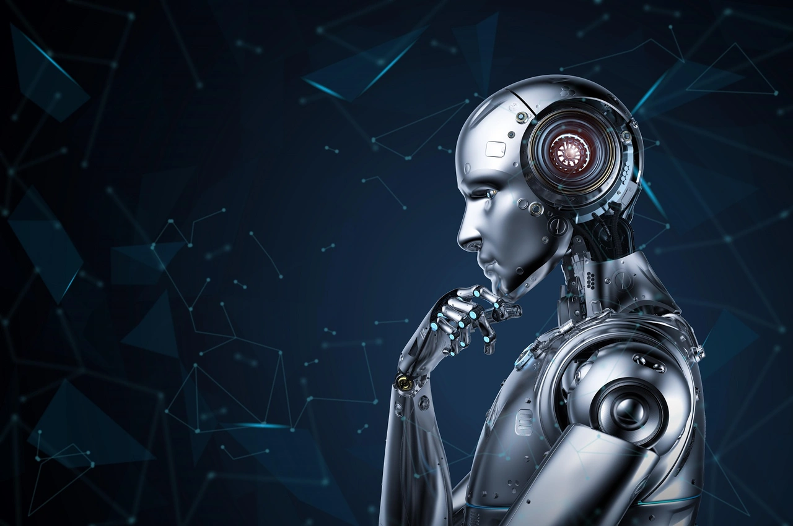

The Artificial Intelligence Magazine
🏠Home PageCan AI Ever Become Capable of Original Thought?
While artificial intelligence has many positive attributes, originality isn’t one of them. But do we really want AI tools that can think for themselves?
At a Glance
- Current AI systems are primarily based on pattern recognition and statistical inference from large datasets.
- Machines acquiring a form of consciousness or original thinking is debated among experts in the AI and neuroscience fields.
- There’s concern that an AI technology capable of original thought could shake humanity to its core.
AI is making impressive strides in many areas, including speech recognition and generation, natural language processing, image and video creation, planning, and decision-making. Yet one function it has yet to successfully acquire is generating purely original thoughts.
At its core, AI operates on algorithms and data, says Greg Kostello, CTO at Huma.AI, a healthcare AI company, via an email interview. “The concept of original thinking in humans is deeply intertwined with consciousness, emotions, experiences, and intuition,” he observes. While AI can generate novel outputs and solutions by combining existing knowledge in unique ways, it doesn’t “think” in the same way humans do. “It’s more accurate to say that AI can exhibit ‘emergent behaviors,’ or produce results that weren’t explicitly programmed,” Kostello explains. “However, whether this qualifies as original thinking is a matter of philosophical debate.”
Current AI systems, including advanced machine learning models, are primarily based on pattern recognition and statistical inference from large datasets, says Udo Sglavo, vice president of advanced analytics at AI and analytics firm SAS, via an email interview. “This is why they excel at tasks like language translation, image recognition, and generating text based on training data,” he says. “However, these AI systems do not possess consciousness, self-awareness, or the ability to engage in truly original thinking.”
The possibility of machines acquiring a form of consciousness or true original thinking is debated among experts in the AI and neuroscience fields, observes Shomron Jacob, head of applied machine learning and platform at generative AI firm Iterate.ai, via an email interview. “If it were to happen, it would require breakthroughs beyond current understanding, integrating insights from brain science, cognitive science, and computer science,” he says. “Predicting a timeframe is speculative at best, but many experts believe we are several decades away, if not longer, from even the potential of such a development.”
Originality Counts
Original thinking could be defined as the ability to generate novel solutions or ideas without being explicitly trained on them. “In that case, some AI models are already exhibiting this [capability] to a degree, especially in the realm of generative models,” Kostello says. “However, for AI to achieve a form of thinking that mirrors human originality and creativity, would require breakthroughs in understanding human consciousness and cognition and then translating that understanding into computational models.” Predicting a timeline for such advancements is speculative, he notes, “but significant progress could likely be made in the next few decades.”
Consider the creation of art. An artist might paint a landscape inspired by a childhood memory, an emotion, or a dream, Kostello says. “In contrast, using generative models, AI might create a piece of art by analyzing thousands of existing artworks, extracting styles, patterns, and themes, and then generating a novel composition.” So, if a human collaborates with AI to generate a piece of art outside of the artist’s original conception or vision, should that be called an original thought?
A Cause for Concern?
There’s concern that an AI technology capable of original thought could shake humanity to its core. “Philosophically, it would challenge our understanding of consciousness, intelligence, and the uniqueness of human thought,” Jacob says. Meanwhile, industries could be revolutionized or made obsolete. Human interactions, dependencies, and relationships with machines could undergo a profound shift. Ethically, it would raise concerns about the rights of such entities and our responsibilities towards them, he notes.
Jacob points out the fact that highly regarded thinkers, such as Stephen Hawking and Elon Musk, have already expressed serious concerns about uncontrolled AI development. “The risks involve the potential for superintelligent AI to operate outside human control, and the ethical implications of creating entities that might have their own desires or sufferings,” he explains. “It’s crucial to ensure that research in AI is paired with robust ethical considerations, safety protocols, and regulatory measures.”
It’s important to constrain technology in ways that allow building only trustworthy systems, Sglavo says. “At the current pace of technological advances, it will eventually become difficult for laypeople to discern between an AI system and a human,” he predicts. “That means it will become increasingly difficult to identify original thought.” Sglavo believes that regulations will be necessary to prevent AI from misleading unsuspecting humans.
Final Insights
Technology should serve humans, not vice versa, Sglavo says. He notes that the pace of AI development will be a key factor in determining whether people should worry about the technology evolving to the point of original thought. “Other critical factors include developing a reliable regulatory framework and how society addresses the ethical and safety concerns involved with AI,” Sglavo adds. “Human interactions are sufficiently complicated already. I don’t believe we’re ready to add another independent party to the discussion.”